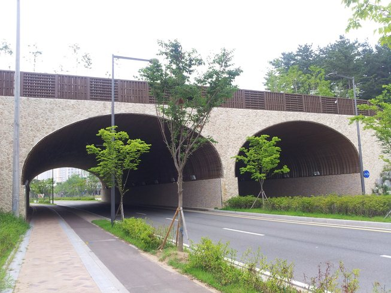
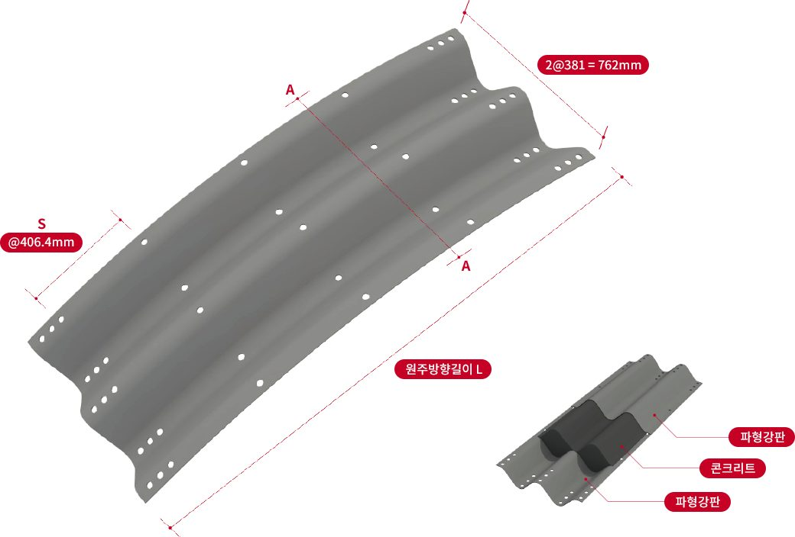
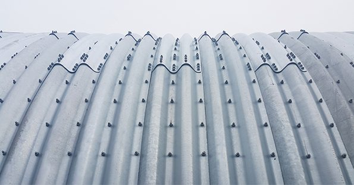
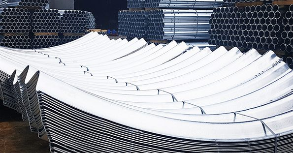
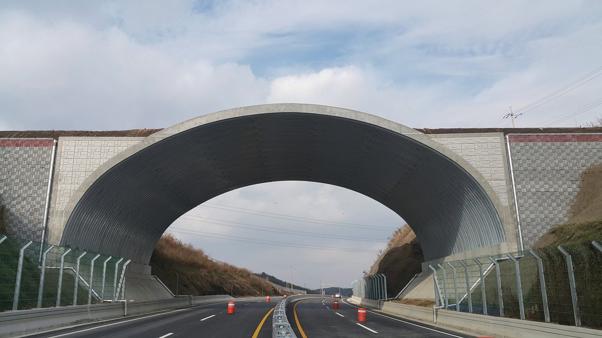
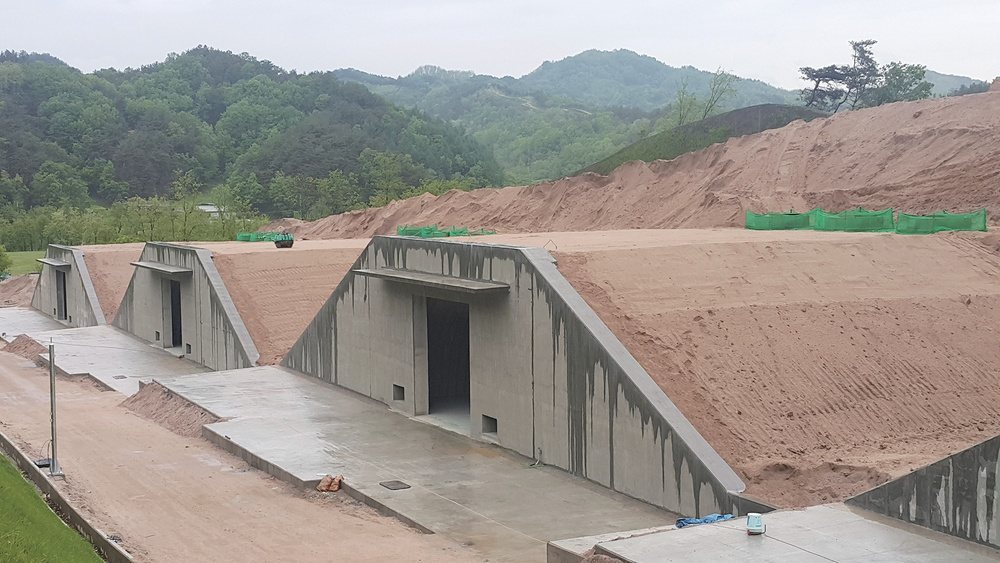
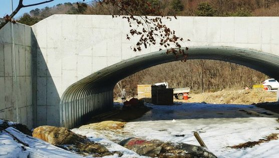

波形鋼板結構Corrugated steel plate structures파형강판 구조물
涵洞、生態廊道、橋梁、明挖隧道。現階段由 REXSTEEL 韓國工廠製造進口供應，台灣在地生產規劃中；每一案件由本公司提供完整結構設計。Culverts, wildlife crossings, bridges and cut-and-cover tunnels. Currently manufactured by REXSTEEL in Korea and imported, with Taiwan production planned. Every project comes with our full structural design.암거, 생태통로, 교량, 개착식 터널. 현재는 REXSTEEL 한국 공장에서 제작해 수입 공급하며 대만 현지 생산을 계획 중입니다. 모든 프로젝트는 당사가 구조설계를 완비해 드립니다.
與土壤共同受力的鋼結構A steel structure that works with the soil흙과 함께 하중을 받는 강구조
在鋼板上壓製一定規格的波形，以提高彎曲剛性、強度與耐久性。埋設後，上方載重產生的垂直土壓由側向土壓平衡，形成環向壓縮狀態，抑制彎矩，以較少材料承受高填土與車輛載重。Corrugating steel plate raises its bending stiffness, strength and durability. Once buried, vertical earth pressure is balanced by lateral soil pressure, putting the ring into compression and suppressing bending, so the structure carries high fill and traffic with little material.강판에 일정 규격의 파형을 만들어 휨강성·강도·내구성을 높인 구조재입니다. 매설 후 상부 하중에 의한 연직토압이 측방토압과 균형을 이루어 링 압축 상태가 되고 휨모멘트가 억제되므로, 적은 재료로 높은 성토와 차량하중을 견딥니다.
| 供應方式Supply공급 방식 | REXSTEEL 韓國工廠製造，進口供應Made by REXSTEEL in Korea, importedREXSTEEL 한국 공장 제작, 수입 공급 |
|---|---|
| 在地生產Local production현지 생산 | 台灣生產規劃中Planned for Taiwan대만 생산 계획 중 |
| 結構設計Design구조설계 | 本公司以 CORRA 系統完整設計Full design in-house with CORRA당사 CORRA 시스템으로 완전 설계 |

更省、更快，
施工中可維持通行Cheaper, faster,
traffic keeps moving더 싸고 더 빠르게,
시공 중에도 통행 가능
工廠以相同製程生產，品質一致；現場以螺栓組裝，受季節影響小。施工期間車輛可通行，不必另設便道，適合緊急修復。鋼材可 100% 回收。Factory-made to one process for consistent quality and bolted together on site with little weather sensitivity. Traffic can pass during construction with no detour, which suits emergency repairs. The steel is 100% recyclable.공장에서 같은 공정으로 만들어 품질이 일정하고, 현장에서는 볼트로 조립해 계절 영향이 적습니다. 시공 중에도 차량이 통행할 수 있어 우회도로가 필요 없고 긴급 복구에 유리합니다. 강재는 100% 재활용됩니다.
標準型與大型波形鋼板Standard and large-profile plate표준형과 대형 파형강판
兩種斷面依跨距與填土高度選用。以相同比例繪製。Two profiles, chosen by span and fill height. Drawn to the same scale.두 단면을 경간과 성토고에 따라 선택합니다. 같은 비율로 그렸습니다.
標準型Standard표준형 · 150 × 50
REX-B381 · 大型Large대형 381 × 140



承載力三倍以上Over 3× capacity지지력 3배 이상
REX-B381 將波距與波深加大三倍以上，抵抗高填土與偏土壓造成的應力集中。REX-B381 triples pitch and depth to resist stress concentration from high fill and eccentric pressure.REX-B381은 피치와 깊이를 3배 이상 키워 고성토와 편토압에 의한 응력집중에 저항합니다.
輥軋成型Roll formed롤 성형
以輥軋取代沖壓彎曲，規格精度更高。Roll forming instead of press bending for tighter tolerances.프레스 절곡 대신 롤 성형으로 치수 정밀도가 높습니다.
單片更長Longer plates더 긴 판
圓周方向單片長度由 4.7 m 延長至 7.2 m，接縫與螺栓更少。Circumferential plate length up to 7.2 m (from 4.7 m): fewer seams and bolts.원주방향 판 길이를 4.7 m에서 7.2 m로 늘려 이음과 볼트가 적습니다.
熱浸鍍鋅Hot-dip galvanized용융아연도금
雙面鍍鋅量 900 g/m² 以上。Zinc coating ≥ 900 g/m² (both sides).양면 도금량 900 g/m² 이상.
電著塗裝E-coating전착도장
鹽害及工業區可加做 NET 認證電著塗裝，延長使用年限。NET-certified electrodeposition coating extends life in coastal and industrial zones.염해·공업지역에는 NET 인증 전착도장을 추가해 수명을 늘릴 수 있습니다.
依跨距與淨高選擇Chosen by span and rise경간과 높이에 따라 선택
台灣與韓國施工實例Projects in Taiwan and Korea대만·한국 시공 사례
涵洞與通水路、生態廊道、橋梁、明挖隧道、礦山、防護設施、滯洪池、既有結構補強與建築物。台灣山區道路已有拱形結構實績，詳見工程實績。Culverts and channels, wildlife crossings, bridges, cut-and-cover tunnels, mines, protective structures, detention tanks, rehabilitation and buildings. Plate arches have already been built on Taiwan mountain roads; see the project record.암거·수로, 생태통로, 교량, 개착식 터널, 광산, 방호시설, 저류조, 기존 구조물 보강, 건축물. 대만 산간도로에 아치 구조물 실적이 있습니다. 시공 실적 참조.

台灣 · 山區道路拱形結構Taiwan · mountain road arch대만 · 산간도로 아치
大型波形鋼板 REX-B381Large-profile plate REX-B381대형 파형강판 REX-B381

生態廊道Wildlife crossing생태통로
跨越道路之動物通道Animal bridges over highways도로를 건너는 동물 통로

明挖隧道Cut-and-cover tunnel개착식 터널
大跨徑道路隧道Long-span road tunnels장경간 도로 터널

涵洞 · 通水路Culverts암거 · 수로
取代鋼筋混凝土箱涵Replacing RC box culverts철근콘크리트 박스 암거 대체

橋梁Bridges교량
跨越溪流之拱形結構Arches over streams하천을 건너는 아치 구조
每一案件，由我們完整設計Every project, fully designed by us모든 프로젝트를 당사가 직접 설계합니다
本公司以 CORRA 波形鋼板結構設計系統，依案件之跨距、斷面、填土高度與各種載重條件，完成結構計算、斷面選定與施工圖，交付業主及設計單位。CORRA 為 REXSTEEL 自行開發之專用系統，僅供合資公司內部使用，不對外提供。Using the CORRA corrugated plate design system, we complete structural calculations, profile selection and construction drawings for each project's span, shape, fill height and loading, and deliver them to the owner and designer. CORRA is REXSTEEL's proprietary system, used only within the joint venture and not available outside it.당사는 CORRA 파형강판 구조설계 시스템으로 현장의 경간·단면·성토고와 각종 하중 조건에 맞춰 구조계산, 단면 선정, 시공도를 완성해 발주처와 설계사에 제출합니다. CORRA는 REXSTEEL이 자체 개발한 전용 시스템으로, 합작법인 내부에서만 사용하며 외부에 제공하지 않습니다.
交付內容Deliverables제출 내용
- 結構計算書（各種載重條件）Structural calculation report (all load cases)구조계산서 (각종 하중 조건)
- 斷面形狀與板厚選定Shape and thickness selection단면 형상과 판 두께 선정
- 組裝圖與施工圖Assembly and construction drawings조립도와 시공도
- 施工技術諮詢Installation support시공 기술 상담
需要有限元素分析時When finite-element analysis is added유한요소해석이 필요한 경우
- 偏土壓、不均勻沉陷造成荷重不平衡Unbalanced load from eccentric pressure or uneven settlement편토압·부등침하로 하중이 불균형할 때
- 大跨徑或高填土Long span or high fill장경간 또는 고성토
- 覆土低於最小保護層、頂部承受特殊載重Cover below minimum, special top loads토피가 최소 피복보다 얕거나 상부에 특수하중이 있을 때
- 斜交角度過大、多跨不同斷面組合Large skew, multi-span mixed shapes사각이 크거나 다경간에 서로 다른 단면을 조합할 때
MIDAS CIVIL · GTS NX · FEA NX
參考設計規範：AASHTO LRFD · CHBDC · AS/NZS 2041 · KDS 14 31 10Reference codes: AASHTO LRFD · CHBDC · AS/NZS 2041 · KDS 14 31 10참고 설계기준: AASHTO LRFD · CHBDC · AS/NZS 2041 · KDS 14 31 10
波形鋼板型錄Plate catalogue파형강판 카탈로그 ↓CORRA 系統介紹About CORRACORRA 소개 →
鍍鋅 900 g/m² 之使用年限Service life of 900 g/m² zinc도금량 900 g/m²의 사용 수명
| 環境（ISO 9223）Environment (ISO 9223)환경 (ISO 9223) | 使用年限（年）Service life (years)사용 수명 (년) |
|---|---|
| 重工業區、高鹽沿海Heavy industry, severe coastal중공업지역, 고염분 해안 | 7 – 15 |
| 工業區、沿海地區Industrial, coastal공업지역, 해안지역 | 15 – 30 |
| 市區、輕工業區Urban, light industry도심, 경공업지역 | 30 – 90 |
| 鄉村、田園地區Rural전원·농촌지역 | 90 + |
鹽害及工業區可加做電著塗裝，再延長至少 30 年。Add electrodeposition coating in saline or industrial zones for at least 30 more years.염해·공업지역에는 전착도장을 추가해 최소 30년을 더 늘릴 수 있습니다.
防水與變形管理Watertightness and deformation방수와 변형 관리
- 鋼板接縫插入雙層橡膠墊片，以螺栓壓緊保持水密。Double rubber gaskets in every seam, compressed by bolts.판 이음부에 이중 고무 개스킷을 넣고 볼트로 조여 수밀을 유지합니다.
- 搭接角隅塗聚氨酯密封膠，螺栓加裝橡膠帽，二次防水。Polyurethane sealant at lap corners and rubber bolt caps as a second seal.겹침 모서리에 폴리우레탄 실런트를 바르고 볼트에 고무캡을 씌워 2차 방수합니다.
- 組裝後、回填中、完工後量測斷面；變形容許值：標準鋼板為淨高 5% 以內，大型鋼板為 2% 以內。Section measured after assembly, during backfill and at completion; tolerance 5% of rise (standard) or 2% (large plate).조립 후, 되메움 중, 준공 후 단면을 측정합니다. 변형 허용치: 표준판은 높이의 5% 이내, 대형판은 2% 이내.
- 兩側回填高差小於 20 cm，重型機具距鋼板 60 cm 以外作業。Keep both sides within 20 cm of each other; heavy plant at least 60 cm from the plate.양측 되메움 높이 차는 20 cm 미만, 중장비는 강판에서 60 cm 밖에서 작업합니다.
波形鋼板案件，從設計開始Plate projects start with design파형강판 프로젝트는 설계부터
提供跨距、填土高度與載重條件，即由本公司進行結構設計與報價。Send span, fill height and loading; we design and quote.경간, 성토고, 하중 조건을 주시면 당사가 구조설계와 견적을 진행합니다.